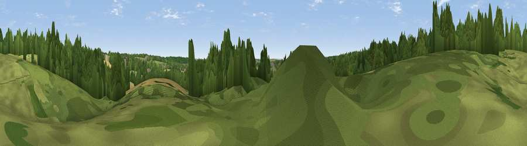

Stonards Hill
#43596 in England · top 49% of its area beats it · near Coopersale StreetThe view, rendered

A 360° render of this exact spot computed from the terrain model, tree cover and land cover — summer colours, afternoon light, calibrated against photographs of famous viewpoints. Real trees, hedges and buildings will differ in detail.
The panorama
Grey silhouette: terrain skyline in each direction (720 bearings, Earth curvature and refraction included). Dashed green: skyline with trees (+15 m) and buildings (+8 m) as obstacles. Blue strip: how far the ground is visible on each bearing.
Where the view opens
Wedge length = distance to the farthest visible ground on that bearing (vegetation-aware). Rings at 10, 25 and 50 km.
What fills the view
46% woodland · 33% grassland · 20% cropland · 2% built-up
Angular shares of the visible panorama (visual magnitude), not map area. Landscape diversity 0.49 (0–1 Shannon).
Key numbers
More beautiful places nearby
The staircase of upgrades: each row has a higher view potential than everything closer. Driving times are estimates from straight-line distance, calibrated against real road routing — check an actual route before setting out.
| Place | Direction | Drive | Score |
|---|---|---|---|
| Viewpoint near Woodhatch | SE · 3 km | ~7 min | 35.5 |
| Lambourne Hill | S · 7 km | ~15 min | 43.5 |
| Viewpoint near Sewardstonebury | WSW · 8 km | ~17 min | 49.8 |
| Viewpoint near Sewardstonebury | SW · 11 km | ~21 min | 50.3 |
| Viewpoint near Wood Green | WSW · 21 km | ~35 min | 51.8 |
| Viewpoint near Erith | SSE · 23 km | ~38 min | 54.3 |
| Viewpoint near Horndon On The Hill | SE · 26 km | ~42 min | 58.8 |
| Harrow on the Hill | WSW · 35 km | ~53 min | 60.7 |
51.69920, 0.12285 · source: osm peak · position refined by local search. Computed location — check access rights before visiting.